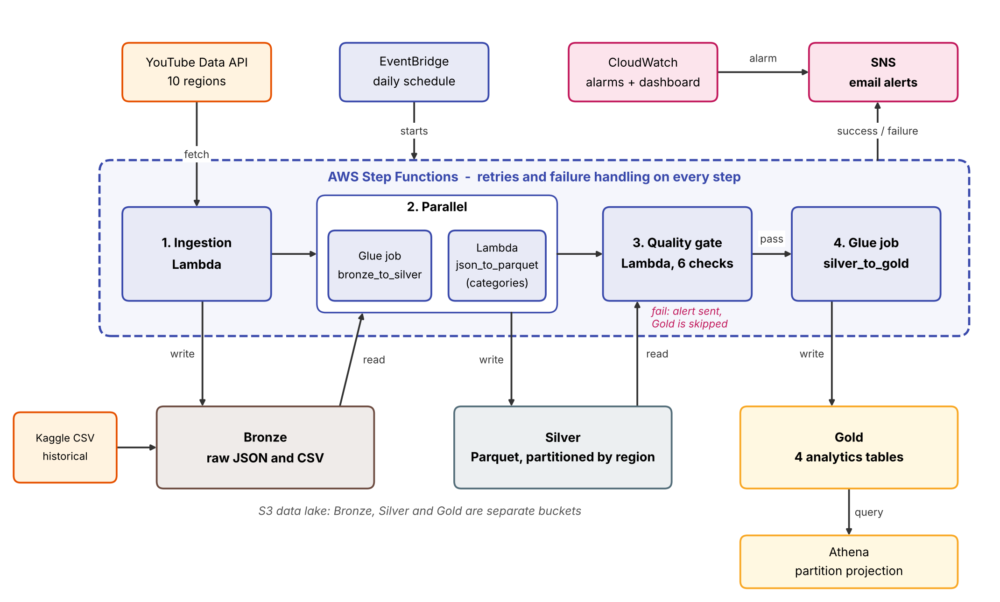
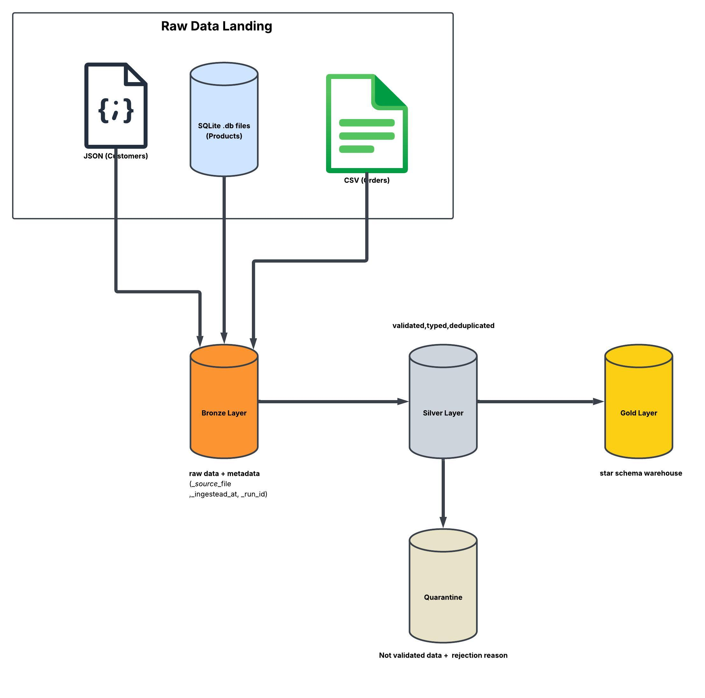
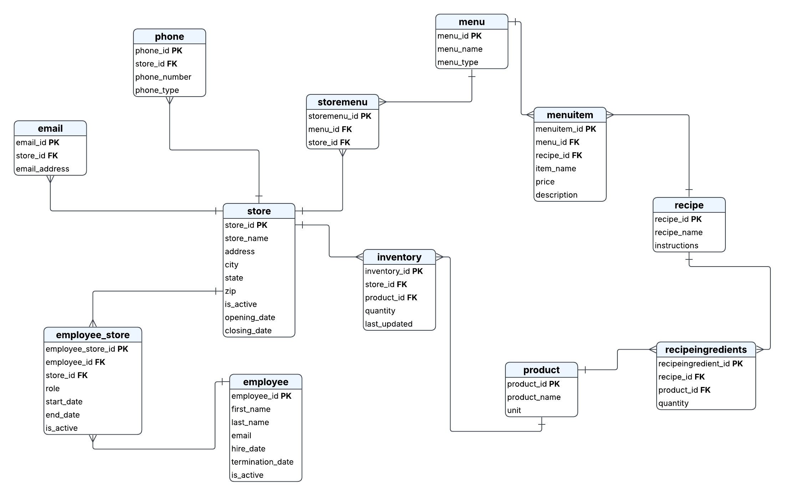
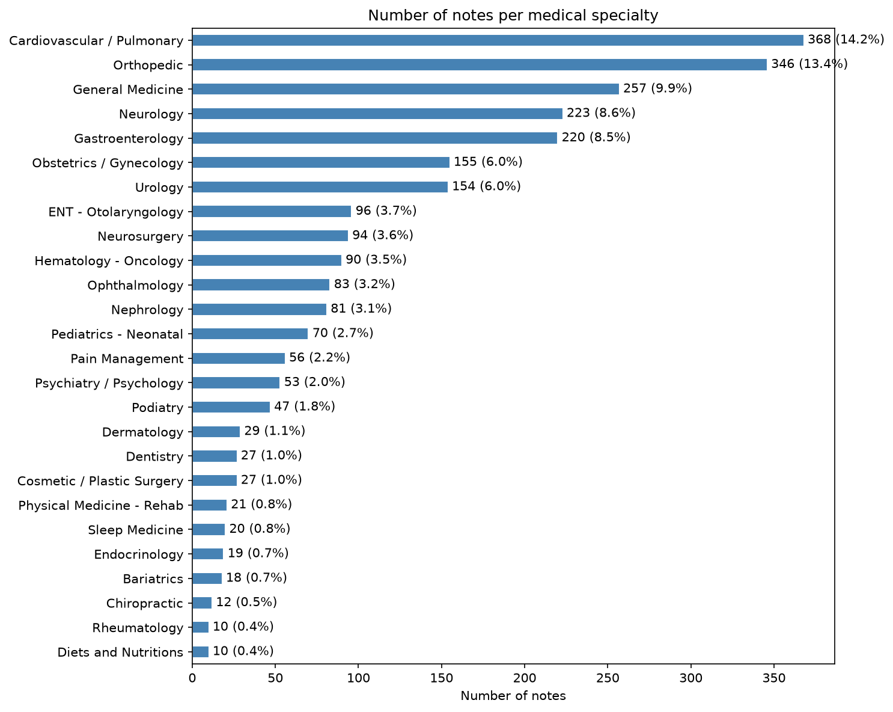

Data engineering and database projects I have built. Each card links to the code on GitHub.

YouTube Trending Data Pipeline
A serverless AWS pipeline that collects trending YouTube videos for 10 countries every day and turns them into analytics tables you can query with SQL in Athena. I built the Lambda and Glue (PySpark) jobs, a data quality gate with six checks, and the Step Functions workflow, all set up as code with Terraform.
View on GitHub

NovaCart ETL Pipeline
A Python ETL pipeline that loads an online store's orders, customers, and products from CSV, JSON, and SQLite files into a star schema data warehouse. I built the Bronze, Silver, and Gold layers with schema validation, a quarantine table for bad rows, and SCD Type 2 history so past customer details are kept.
View on GitHub

Restaurant Franchise Database (1st Place)
A database for a franchise restaurant chain that tracks its stores, employees, menus, recipes, and inventory, and it won 1st place at the MWC3 2026 Collegiate Database Design Competition. I designed the ERD in third normal form (3NF) and wrote the SQL Server schema, indexes, and sample data.
View on GitHub

Medical Transcription Classifier
An NLP project from my IBM Data Engineering internship that sorts medical transcription notes into their medical specialty. I compared three machine learning models (Logistic Regression won with about 70% accuracy) and built a semantic search engine with ChromaDB that finds similar notes.
View on GitHub